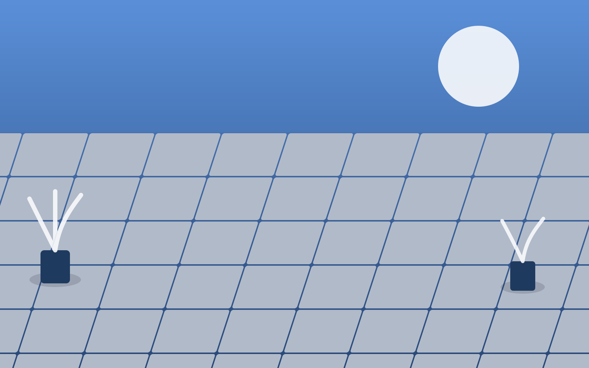

Nettoyage de terrasse à Pau : dallage, bois et pierre comme neufs
Haute pression professionnelle et démoussage adaptés à chaque matériau pour une terrasse prête à profiter du printemps à l'automne.
Demander un devis gratuitLe climat béarnais, entre pluies fréquentes et alternance d'humidité et de soleil, favorise l'apparition rapide de mousses, lichens et dépôts verts sur les terrasses. Au-delà de l'aspect inesthétique, ces dépôts rendent les surfaces glissantes et donc potentiellement dangereuses. HydroPropreté intervient à Pau pour redonner à vos espaces extérieurs leur aspect d'origine, avec un nettoyage haute pression professionnel adapté à chaque type de matériau.
Pourquoi faire appel à un professionnel pour sa terrasse
Un nettoyeur haute pression grand public, mal utilisé, peut endommager durablement une terrasse : joints creusés, éclats sur une pierre tendre, fibres du bois arrachées par une pression trop forte tenue trop près de la surface. Un professionnel connaît les réglages de pression et les buses adaptées à chaque matériau, ainsi que la bonne distance de travail, pour un nettoyage efficace sans risque d'abîmer le support.
Le résultat est aussi plus durable : un nettoyage professionnel élimine les mousses jusque dans leurs racines logées dans les joints et micro-fissures, alors qu'un nettoyage superficiel laisse les mousses repousser en quelques semaines seulement.
Notre méthode de nettoyage de terrasse
Diagnostic du matériau
Identification du support (carrelage, pierre naturelle, béton désactivé, bois) pour définir la pression et les produits adaptés.
Débarras et protection
Dégagement du mobilier extérieur et protection des plantations et éléments sensibles à proximité.
Traitement anti-mousse
Application d'un produit qui décolle les mousses et lichens en profondeur avant le passage haute pression.
Nettoyage haute pression
Passage méthodique sur toute la surface et les joints, avec une pression calibrée selon le matériau.
Traitement préventif (option)
Application d'un produit anti-mousse longue durée pour retarder la réapparition des dépôts.
Un traitement adapté à chaque matériau
- Dallage et carrelage extérieur : haute pression standard avec attention particulière aux joints.
- Pierre naturelle : pression modérée pour préserver le grain et la patine de la pierre.
- Béton désactivé : nettoyage en profondeur des graviers apparents sans les déchausser.
- Bois (pin, exotique, composite) : pression douce, complétée si besoin d'un traitement dégriseur ou saturateur.
Autres surfaces extérieures traitées
Au-delà des terrasses, nous intervenons sur l'ensemble des surfaces extérieures dures : allées carrossables et piétonnes, murets, clôtures, escaliers extérieurs, abords de piscine et cours intérieures. Une demande groupée sur plusieurs surfaces permet souvent d'optimiser le tarif de l'intervention.
À quel moment programmer l'intervention ?
Deux fenêtres sont particulièrement recommandées dans la région de Pau :
- Au printemps, pour retirer les dépôts accumulés durant l'hiver avant la saison d'utilisation extérieure.
- À l'automne, pour repartir sur une surface propre avant les pluies hivernales et limiter l'incrustation de mousse.
Zones d'intervention
Nous intervenons pour le nettoyage de terrasses et espaces extérieurs à Pau et dans les communes voisines :
Demandez votre devis
Précisez-nous la surface approximative et le type de matériau via notre formulaire de contact : nous vous transmettons un devis gratuit sous 24h.
Tout savoir sur le nettoyage de terrasse
Non, à condition d'adapter la pression et la buse au matériau. Nous ajustons systématiquement nos réglages selon la nature du support (pierre naturelle, carrelage, bois, béton désactivé) pour éviter tout endommagement.
Nous proposons un traitement anti-mousse en option après le nettoyage haute pression, qui ralentit la réapparition des mousses et lichens, particulièrement utile dans les zones ombragées ou humides.
Le printemps, avant la saison d'utilisation extérieure, est idéal pour retirer les dépôts hivernaux. Un second passage à l'automne permet de repartir sur une terrasse propre avant l'hiver.
Oui, notre nettoyage haute pression cible aussi les joints, souvent les premiers endroits où la mousse et les résidus verts s'installent durablement.
Le bois (pin, exotique, composite) demande une pression plus douce et parfois un traitement dégriseur ou saturateur en complément, que nous pouvons proposer selon l'état constaté sur place.
Oui, nous intervenons sur l'ensemble des surfaces extérieures dures : allées, murets, clôtures, escaliers extérieurs et abords de piscine.